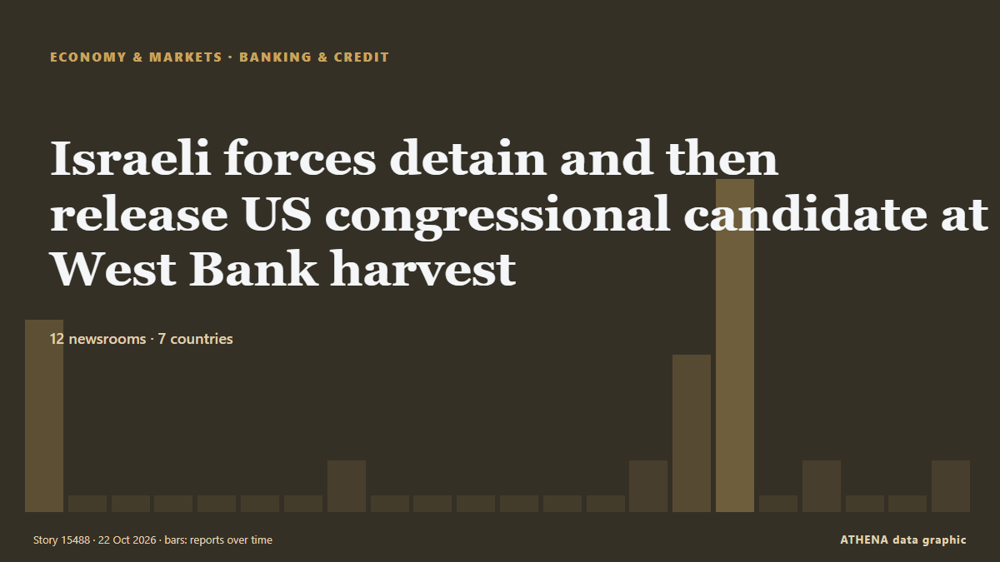

Israeli forces detain and then release US congressional candidate at West Bank harvest

Israeli forces have detained Democratic congressional candidate Brad Lander as he helped Palestinian farmers harvest olives in the West Bank. from The Independent
Reported independently by 12 outlets in 7 countries since 19 Oct, first by Amnesty International; coverage is fading. ATHENA rates the risk moderate (2.3/10), driven mainly by the severity of the harm described and the quality of the evidence. Confidence is 89% (high), with 12 independent outlets corroborating it and an average source reliability of 76%. Who reported it: 5 newsrooms in United Kingdom, 4 newsrooms in Saudi Arabia, 3 newsrooms in Israel. The coverage ran from 19 Oct to 22 Oct, over 63 hours.
Why it matters: This tracker follows the conflict involving Israel, Gaza, the West Bank and Lebanon — military events, humanitarian conditions and diplomacy — as covered by newsrooms around the world.
What changed: 16 new reports from 11 newsrooms in the 24 hours to 22 Oct.
At a glance
Selected, scored and written by ATHENA's published methodology. No editor intervenes in individual events. How this is produced ›
| 19 Oct 15:53 UTC | 5 |
|---|---|
| 19 Oct 18:53 UTC | 0 |
| 19 Oct 21:53 UTC | 0 |
| 20 Oct 00:53 UTC | 0 |
| 20 Oct 03:53 UTC | 0 |
| 20 Oct 06:53 UTC | 0 |
| 20 Oct 09:53 UTC | 0 |
| 20 Oct 12:53 UTC | 1 |
| 20 Oct 15:53 UTC | 0 |
| 20 Oct 18:53 UTC | 0 |
| 20 Oct 21:53 UTC | 0 |
| 21 Oct 00:53 UTC | 0 |
| 21 Oct 03:53 UTC | 0 |
| 21 Oct 06:53 UTC | 0 |
| 21 Oct 09:53 UTC | 1 |
| 21 Oct 12:53 UTC | 4 |
| 21 Oct 15:53 UTC | 9 |
| 21 Oct 18:53 UTC | 0 |
| 21 Oct 21:53 UTC | 1 |
| 22 Oct 00:53 UTC | 0 |
| 22 Oct 03:53 UTC | 0 |
| 22 Oct 06:53 UTC | 1 |
| 19 Oct 18:57 UTC | 3.4 |
|---|---|
| 22 Oct 07:05 UTC | 2.3 |
| 22 Oct 07:05 UTC | 2.3 |
Why these numbers
Importance
Risk
Confidence
The reporting — who reported it, and when
headline as published · opens the original- Amnesty International · United KingdomStates must act as Israeli state-driven settler violence escalates at the start of Palestinian olive harvest
- Arab News · Saudi ArabiaWest Bank on verge of ‘explosion’: senior Palestinian official
- Asharq Al-Awsat (English) · Saudi ArabiaWest Bank on Verge of ‘Explosion’, Says Senior Palestinian Official
- The New Arab · INTHow settler violence is devastating the West Bank olive harvest
- The Guardian · United KingdomIsraeli police detain 10 people in rare raid against West Bank settlers
- The New Arab · INTAmnesty says Palestinians face 'season of horror' in West Bank
- Haaretz (English) · IsraelIsrael briefly detains U.S. congressional candidate Brad Lander in West Bank
- NPR World · United StatesIsrael frees dozens of Americans, including U.S. Congress nominee, after West Bank detention
- The Independent · United KingdomUS congressional candidate detained by Israeli authorities in West Bank
- The Guardian · United KingdomIsraeli military detain US and UK volunteers in West Bank including Democratic NY politician Brad Lander
- RTÉ News · Ireland80 volunteers detained by Israeli forces in West Bank
- Asharq Al-Awsat (English) · Saudi ArabiaUS Democratic Congressional Candidate Lander Detained by Israeli Authorities in West Bank
- The Independent · United KingdomIsraeli forces detain and then release US congressional candidate at West Bank harvest
- The New Arab · INT'Prison under the open sky': Israel seals off West Bank village
- The National · United Arab EmiratesUS election candidate detained by Israel at West Bank olive harvest
- NBC News (World) · United StatesN.Y. congressional candidate Brad Lander says he was detained by IDF soldiers in West Bank
- Haaretz (English) · IsraelAmerican Jews risk deportation from Israel to help Palestinians harvest olives in the West Bank
- The New Arab · INTIsrael detains US congress candidate at West Bank olive harvest
- Haaretz (English) · IsraelBrad Lander's detention makes it harder for American Jews to defend Israel
- Arab News · Saudi ArabiaUS politician, rabbis arrested for helping Palestinian farmers harvest olives in Bethlehem
- The Korea Times · South KoreaIsraeli forces detain and then release US congressional candidate at West Bank harvest